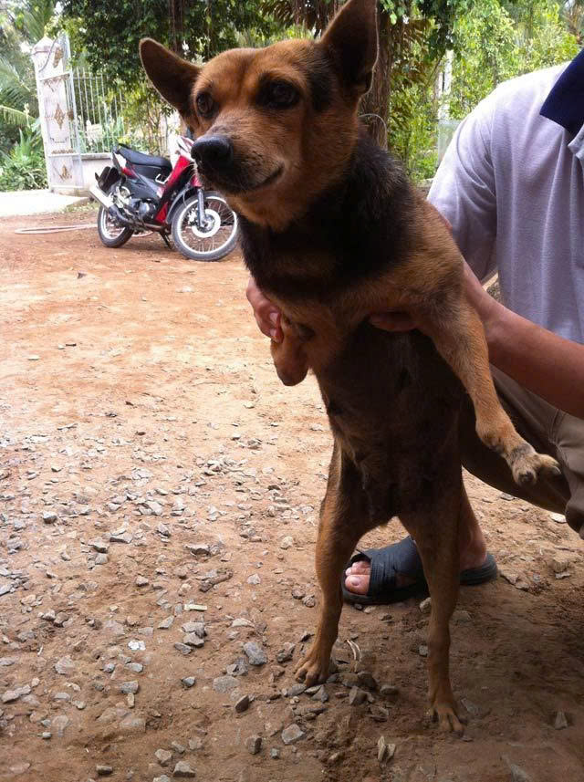

Cảm động chuyện về con chó "Gu" dị tật ở Vĩnh Long
Con chó bị dị tật hai chân trước
Chúng tôi tìm đến nhà ông Huỳnh Văn Sáu (55 tuổi) ở xã Trung Nghĩa, huyện Vũng Liêm, tỉnh Vĩnh Long để tận mắt nhìn con chó kì lạ hiếm thấy ấy.
Châm trà tiếp chúng tôi, hớp một ngậm trà ông Sáu cười khà khà: “Các chú có tìm khắp miền Tây cũng không có con chó thứ hai “bá đạo” như con chó nhà tui đâu”...
Nói rồi chú kêu to “Gu, Gu, ra đây coi!”, từ trong nhà dưới một con chó màu đen, lông mướt rượt, đầu chúi sát đất, mông thì chổng lên, bò bò lại gần bên chú, dụi dụi vào chân chú. Chú Sáu ẵm con chó lên, giơ hai chân trước của nó ra cho chúng tôi nhìn kỹ hơn: Bên trái có cục thịt nhỏ xíu và không có móng, chân phải cong quẹo chỉ bằng một nửa chân sau và cũng chỉ có hai móng.
Ông Sáu tiếp: “Số con chó này cũng lận đận, hồi mới sinh ra là nhỏ hơn mấy con trong bầy nhiều lắm. Được mấy ngày, nó bò ra ngoài, rớt xuống mé kênh cạn nước nằm đó từ sáng, đến chiều thằng con tôi mới phát hiện, lúc đó cứ tưởng nó chết không chứ. Mấy con cùng bầy với nó hàng xóm láng giềng xin về nuôi hết. Còn con này, thấy nó nhỏ xíu, lại bị tật nên người ta chê không bắt, tôi để lại nuôi từ đó đến giờ luôn. Tụi nhỏ nhà tôi thương nó lắm, chăm sóc kỹ càng, cho ăn đầy đủ… Chắc nhờ vậy mà nó không bệnh tật gì hết. Mấy con kia, con thì bệnh chết, con thì bị người ta mần thịt, còn nó sống dai ghê, gần 20 năm rồi còn gì
“Tuy dị tật cả hai chân trước nhưng con chó lại nhanh nhẹn như những con chó bình thường khác”, ông Sáu vừa nói vừa cầm mẩu bánh quăng ra xa. Chúng tôi bất ngờ thấy con chó chạy cái vèo ngậm lấy miếng bánh vừa rơi xuống rồi lại chạy cái vèo đến bên chú Sáu, cử chỉ bình thường như những con chó khác.
Dẫn chúng tôi đi thăm vườn nhà, ông Sáu kể tiếp chuyện con “Gu ”: thấy nó xấu xí vậy chứ mắn đẻ lắm, nó đẻ được 5 lứa rồi đó, lứa nào cũng năm sáu con, những con chó con đó hoàn toàn bình thường. Con “Gu” tật nguyền thế mà mát sữa, chăm con khéo lắm, nên con nó rất đẹp, mập mạp, ai nhìn cũng thích. Mấy lứa đó, ai xin tôi đều cho hết.

Dẫn chúng tôi đi thăm vườn nhà, ông Sáu kể tiếp chuyện con “Gu ”: thấy nó xấu xí vậy chứ mắn đẻ lắm, nó đẻ được 5 lứa rồi đó, lứa nào cũng năm sáu con, những con chó con đó hoàn toàn bình thường. Con “Gu” tật nguyền thế mà mát sữa, chăm con khéo lắm, nên con nó rất đẹp, mập mạp, ai nhìn cũng thích. Mấy lứa đó, ai xin tôi đều cho hết.
Có một lứa nó đẻ duy nhất một con đực, màu lông đen tuyền, rất đẹp, có móng đeo. Nghe mọi người nói theo kinh nghiệm dân gian, chó có móng đeo rất khôn và đẻ một con thì rất tốt, nên tôi để lại nuôi. Hổng biết do trùng hợp hay sao mà năm đó, tôi làm lúa trúng mùa, nuôi heo bán được giá.
Đang hào hứng kể, tự dưng chú Sáu xuống giọng buồn buồn: Tôi nhớ hai con chó quấn quýt nhau dữ lắm, mẹ đi đâu là con theo đó. Dù con ”Đen” đã lớn, khi cho ăn lúc nào con mẹ cũng nhường cho con “Đen” ăn trước. Khoảng 2 năm trước, một đêm nọ đang ngủ, tôi nghe tiếng hai mẹ con nó sủa quá trời, rồi nghe tiếng xe máy nẹt pô, rồ ga chạy. Tôi chạy ra coi thì thấy con “Đen” bị mấy thằng trộm chó thẩy vòng bắt mất tiêu, còn con “Gu” thì mình mẩy máu me tùm lum. Tội nghiệp lắm mấy chú ơi, lúc đó con “Gu ” nó bỏ ăn cả tuần lễ, suốt ngày nằm ở ngoài cổng ngóng tới ngóng lui. Chắc nó buồn, nó nhớ con nó lắm.
Con “Gu” – một con chó có lẽ có một không hai ở miền Tây này như ông Sáu đã nói, thân mang dị tật nhưng sống dai, lại là một con chó mẹ hết lòng vì con, đúng là tình mẫu tử thiêng liêng không chỉ dành riêng cho con người.

Chúc Gu sẽ luôn mạnh khỏe, bình an và tràn đầy năng lượng như chính tinh thần trung thành mà Gu đã dành cho gia đình ông Sáu suốt bao năm qua. Mong rằng từng ngày trôi qua, Gu vẫn sẽ là người bạn bốn chân lặng lẽ nhưng bền bỉ, luôn túc trực trước cổng nhà, canh giữ từng góc sân, từng mái hiên quen thuộc như một phần không thể thiếu của mái ấm này.
Gu không chỉ đơn thuần là một chú chó trông nhà, mà còn là một thành viên thực thụ trong gia đình – người bạn luôn hiện diện trong những buổi sáng yên bình, những chiều muộn nắng nhạt và cả những đêm khuya tĩnh lặng. Dù mưa hay nắng, dù ngày dài hay đêm vắng, Gu vẫn ở đó, kiên nhẫn và trung thành, mang lại cảm giác an tâm cho ông Sáu và những người thân yêu.
Mong rằng Gu sẽ tiếp tục đồng hành cùng gia đình trong thật nhiều năm nữa, chứng kiến thêm nhiều mùa cây thay lá, nhiều khoảnh khắc sum vầy, và luôn được yêu thương, chăm sóc bằng tất cả sự trân trọng mà Gu xứng đáng nhận được. Bởi hơn ai hết, Gu đã dành cả tuổi trẻ, cả sự trung thành và trái tim thuần khiết của mình để bảo vệ và gắn bó với ngôi nhà này.
Chúc Gu luôn khỏe mạnh, sống thật lâu, thật hạnh phúc và mãi là người bạn đồng hành đáng tin cậy, lặng thầm nhưng vô cùng quý giá trong cuộc sống của gia đình ông Sáu